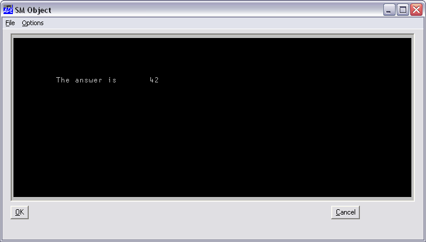

| Parents | Children | Properties | Methods | Events |
| Purpose: | Defines a window for ⎕SM/⎕SR. |
Description
This object defines a window for ⎕SM/⎕SR and allows you to combine the functionality of ⎕SM/⎕SR with the "windows" GUI. For example, you can define a Form with a MenuBar at the top and a ⎕SM window beneath it, with perhaps some Buttons alongside.
To allow the user to interact with both ⎕SM and other top-level objects, you must specify the names of these objects in the right argument of ⎕SR. Thus the statement :
CTX ← KEYS CTX ⎕SR 1 2 3 'Form1'
allows the user to interact with fields (rows) 1-3 of ⎕SMand with the object 'Form1' and its children. Callback functions associated with events in 'Form1' will be executed automatically by ⎕SR. If an enabled event without a callback occurs, the event will be placed on ⎕DQ's internal queue and ⎕SR will terminate. The nature of the termination (i.e. that it was caused by an event in an object) is reported by the value 131072 (2*17) in the fourth element of ⎕SR's result. The specific event (Configure, MouseUp, etc.) is however not reported. It is therefore generally preferable to use callbacks.
The Posn, Size and Coord properties allow you to specify the position and size of the window occupied by ⎕SM within its parent Form. Note however that the ⎕SM window will automatically be sized to be an exact number of characters in height and width which will be reported in ⎕SD.
The Border property may be used to specify a border around the outside of the ⎕SM window. It is a number with the value 0 (no border) or 1 (1 pixel border). The default is 0. The EdgeStyle property may be used to give the object a 3-dimensional appearance. Its default value is 'Recess'. The area within the SM object that is defined by ⎕SM is necessarily a multiple of the character size. The region between this area and the outer edges of the object is coloured by the background colour specified by BCol, or may be filled with a bitmap specified by Picture.
If the user resizes the Form which contains the SM object, the SM object will generate a Configure event if enabled. If the Configure event is not enabled, ⎕SR will terminate with a RESIZE error which can be trapped using ⎕TRAP. Either method can be used to reformat ⎕SM as appropriate.
The MouseDown event can be used to bring up a pop-up menu. Note however that mouse events are not reported over ⎕SM fields because ⎕SR uses these to position the cursor.
The illustration shown below was produced as follows :
'TEST' ⎕WC 'Form' 'SM Object' (60 10)(40 50)
'TEST.MB' ⎕WC 'MenuBar'
'TEST.MB.F' ⎕WC 'Menu' '&File'
'TEST.MB.O' ⎕WC 'Menu' '&Options'
'TEST.B1' ⎕WC 'Button' '&OK' (84 2)
'TEST.B2' ⎕WC 'Button' '&Cancel' (84 78)
'TEST.S' ⎕WC 'SM'(2 2)(80 96)('BCol'192 192 192)
⎕SM←↑('The answer is' 5 10)(42 5 30)